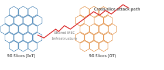

5G Slices and the Shared MEC Problem
Cross-slice compromise is plausible when slices share a cloud-native MEC stack and isolation is logical rather than hard. Here's what the standards actually say and where the real risk sits.

TL;DR: 5G network slices are supposed to be isolated from each other. But when multiple slices share the same edge computing infrastructure (MEC), an attacker who gets into one slice can often pivot into others by exploiting weak Kubernetes isolation, not by breaking 5G itself.
Background
5G network slicing is how operators partition a single physical network into multiple virtual networks, each optimised for a different use case. An IoT slice might prioritise low power and massive device density. An OT (operational technology) slice might prioritise low latency and high reliability for industrial control. Each slice gets its own logical network with its own S-NSSAI (Single Network Slice Selection Assistance Identifier) – a 32-bit identifier that uniquely references a network slice, consisting of an SST (Slice/Service Type) and optionally an SD (Slice Differentiator). The UE (User Equipment) receives allowed S-NSSAIs after primary authentication.
An NSI (Network Slice Instance) is a concrete, instantiated running network slice. One logical slice definition can have multiple NSIs deployed across different locations or tenancies. The risk is highest when multiple NSIs run on the same MEC cluster and share the Kubernetes control plane.
MEC (Multi-access Edge Computing) places compute and storage at the edge of the network, close to the RAN (Radio Access Network) – the radio part of the 5G network connecting UEs to the core, including base stations (gNodeBs) and radio units – instead of routing everything back to a central data centre. This enables low-latency applications like factory automation, autonomous vehicles, and real-time video analytics. The MEC platform runs as a cloud-native stack – typically Kubernetes – on infrastructure that may be shared across multiple slices.
The MEP (MEC Platform) is the software layer that hosts MEC applications. A shared MEP means multiple NSIs' applications run on the same platform software, which is where the isolation assumptions tend to break down. The MEO (MEC Orchestrator) is the ETSI MEC architecture component responsible for orchestrating MEC applications and resources, including application lifecycle, placement, and scaling.
On the 5G core side, the AMF (Access and Mobility Management Function) handles registration, connection, mobility management, and access authentication. The SMF (Session Management Function) manages PDU sessions, IP address allocation, and traffic routing rules. The UPF (User Plane Function) handles packet routing and forwarding – in MEC deployments, the UPF is often co-located with the MEC platform to enable edge processing. The NSSF (Network Slice Selection Function) determines which network slice instances a UE should connect to based on S-NSSAI and local policy. The NRF (Network Repository Function) provides service discovery, allowing NF (Network Function) instances to discover available services from other NFs. The PCF (Policy Control Function) implements the unified policy framework for network slicing, mobility management, and session management.
Cross-slice refers to movement or access that crosses the boundary between two network slices. In this context, it means an attacker starting in a low-value slice (say, IoT) reaching into a higher-value slice (say, OT) by exploiting shared infrastructure rather than breaking the slice abstraction itself. The realistic attack paths use standard Kubernetes and cloud-native patterns: RBAC (Role-Based Access Control) policies, service account tokens, DNS-based service discovery, and NetworkPolicy resources. A service mesh (infrastructure layer handling service-to-service communication like Istio or Linkerd, providing mTLS, traffic management, and observability) may provide encryption but often lacks fine-grained authorization by default. East-west traffic – network traffic flowing between services within a data centre or cluster, as opposed to north-south traffic entering or exiting – is where most cross-slice pivoting happens.
The Main Finding
Cross-slice compromise isn't primarily a failure of the 5G slice abstraction. It's a failure of the shared MEC and Kubernetes layer above it. An IoT slice and an OT slice can share the same cluster, the same service mesh, the same observability stack. When they do, an attacker who gets into the low-value workload doesn't need to break the radio layer or the core network functions. They just walk across the shared cloud infrastructure.
This isn't exotic. It uses the same cluster-management features operators rely on every day: service account tokens, DNS-based service discovery, permissive east-west networking, weak authorization policies. When those layers are hardened, cross-slice movement gets much harder and usually requires node compromise or privileged operator credentials to proceed.
The 5G slice mechanisms themselves aren't the weak point. The realistic attack surface is the shared MEC and Kubernetes layer sitting above them.
What Standards Actually Assume
The 5G layer has real controls. 3GPP specifies mutual TLS on slice management interfaces, confidentiality, integrity, replay protection, and OAuth or local-policy authorization. A UE gets an allowed S-NSSAI only after primary authentication. There's optional Network Slice Specific Authentication for slices that need stronger vertical control. Inside the core, access tokens may carry allowed NSSAIs or NSI IDs, and an NF service producer is supposed to verify it actually serves the slice named in the token before doing anything.
ETSI's MEC slicing work says sharing is allowed, but only if the MEC platform is slice-aware. In a shared MEP scenario, services from different NSIs must be distinguished, service discovery should stay within the same NSI, per-NSI traffic rules must exist, and an entity in one NSI should not configure traffic rules in another.
CISA and NSA's 5G cloud guidance explicitly assumes an attacker may get a foothold in one cloud resource and try to move laterally. Their recommendations: multi-tenancy, strong pod isolation, no privileged containers, restrictive namespaces, runtime detection, fast isolation of compromised pods or nodes.
Put together, the standards picture is straightforward: 5G slicing security relies on authorized management, authorized NF-to-NF use, and slice-aware MEC behavior. The residual risk is where those controls meet shared cloud-native infrastructure.
The Misconfigs That Enable Pivoting
Namespace-only multitenancy
Kubernetes itself says namespaces are only one part of control-plane isolation. This model needs additional RBAC, networking, plugins, and security practices to actually isolate tenants. Namespace isolation doesn't cover non-namespaced resources like CRDs, storage classes, and webhooks. In a MEC cluster running both an IoT slice and an OT slice, compromise in one namespace can become cross-slice if RBAC or cluster-wide resources aren't tightly scoped.
Over-broad RBAC plus service-account exposure
Kubernetes warns that list and watch on Secrets effectively leak secret contents. The right to create workloads implicitly grants access to Secrets, ConfigMaps, and PersistentVolumes in that namespace. A default ServiceAccount is assigned automatically if none is specified, and API credentials are automounted by default. In a shared MEC cluster, that's a direct path from RCE in an IoT pod to Kubernetes API access to secrets or workload manipulation in neighboring namespaces.
Flat east-west networking
Kubernetes pods are non-isolated for egress and ingress by default, and a NetworkPolicy resource does nothing unless the network plugin implements it. Kubernetes DNS lets workloads resolve services in other namespaces by just using the namespace-qualified name. Even if applications are mentally labeled "IoT" and "OT," a compromised IoT pod can still discover and probe OT services unless the operator has set up actual deny-by-default network policy.
Service mesh with encryption but no authorization
Istio allows all requests by default when no AuthorizationPolicy exists. It recommends default-deny to avoid accidentally permitting traffic. But if mesh-wide PeerAuthentication mode is unset, the default is PERMISSIVE. A shared mesh can encrypt traffic just fine and still fail to enforce slice boundaries. Linkerd has a similar issue: its default allow policy at install can be all-unauthenticated. Teams often deploy mTLS first for encryption and postpone fine-grained authorization indefinitely.
Shared observability with weak tenant separation
Grafana Loki has no built-in authentication layer. It requires an authenticating reverse proxy. Multi-tenant isolation depends on the X-Scope-OrgID header, and operators can disable multi-tenancy entirely with auth_enabled: false. Prometheus warns that its HTTP endpoints expose all time-series information and operational details. In a shared MEC environment where logs and metrics are reachable for "self-service analytics," these systems can become cross-slice intelligence sources.
Shared CI/CD or registry credentials across slices
GitLab's job-token docs say a leaked CI job token can access private data available to the user that ran the job. If the job-token allowlist is disabled, jobs from any project can access the target project. In a combined IoT/OT delivery pipeline, compromise of the low-value slice becomes persistence in the high-value slice through image replacement, pipeline abuse, or registry access.
Privileged or host-level escape paths
NSA/CISA warn that privileged containers can reach kubelet-authorized APIs and move laterally. Arbitrary hostPath access and nodes/proxy access are privilege-escalation risks. If OT and IoT slices share worker nodes, or if powerful privileged agents run next to internet-facing IoT apps, blast radius expands from cross-namespace to entire cluster and every slice on that MEC host.
The Paths That Matter Most
IoT workload to Kubernetes control plane to OT namespace
RCE in a low-value MEC pod, theft of the automounted ServiceAccount token, enumeration of accessible resources, abuse of over-broad RBAC, then reading Secrets, deploying a workload, or binding to more privileged service accounts in a neighboring namespace. No telco-specific protocol weakness needed. Standard cluster-management features are enough.
IoT service to shared service mesh to OT microservice
The attacker stays at the data plane instead of the Kubernetes API plane. DNS permits cross-namespace discovery, NetworkPolicy is permit-heavy unless configured, and Istio allows requests where no authorization policy exists. An attacker can enumerate internal service names, test which ones accept requests, and abuse overexposed internal APIs in the OT namespace.
IoT workload to shared observability to OT secrets
If Loki sits behind a weak or absent reverse proxy, or if Prometheus endpoints are broadly reachable, the attacker may not need direct OT service access at first. Reading telemetry can reveal service names, API paths, namespaces, credentials accidentally logged in clear text, or deployment metadata.
IoT workload to CI/CD token to OT redeployment
Slower than direct east-west movement, but operationally more devastating. It converts a transient foothold into durable supply-chain control. Realistic when the same registry, runners, or cross-project job-token policies are shared across slices.
IoT workload to privileged pod to cluster admin to every slice
Once the attacker has host-level control, higher-layer protections lose most of their value. The adversary can impersonate or reconfigure local platform components. This is where "slice" stops being a meaningful boundary and the problem becomes classic cloud-host compromise.
How Good Are the Controls
When deployed as intended, the 5G-specific controls are meaningful. 3GPP's slice management protections, allowed-S-NSSAI model, NF access-token checks, and optional slice-specific authentication constrain which users, devices, and network functions interact with which slices. ETSI's requirement that shared MEPs be slice-aware is also relevant. If an operator implements those controls end-to-end and keeps the application plane equally strict, routine cross-slice pivots should be uncommon.
When deployed the way many cloud-native platforms start life, they are not sufficient. Kubernetes namespaces alone are not hard multitenancy. NetworkPolicy starts from a non-isolated default. Istio starts from "allow all unless policy is applied." Linkerd may default to broad allow modes unless explicitly hardened. Loki relies on an external reverse proxy for authentication and can be run single-tenant. These mechanisms are effective mostly to the degree that operators opt into their stricter modes and maintain them over time.
OT or enterprise slices should not rely on "logical slice" status alone if they share a MEC cluster with consumer-facing workloads. Kubernetes, NIST, NSA/CISA, and NGMN all point toward stronger tenancy for higher-trust workloads: dedicated clusters, dedicated namespaces plus strong policy, control-plane virtualization, or separate nodes for powerful pods and untrusted internet-facing apps.
What to Watch For
Kubernetes API audit data
Kubernetes audit logging records what happened, when, who initiated it, on what object, and from where. The high-value events: reads or watches of Secrets, creation of workloads in unusual namespaces, creation of serviceaccounts/token requests, RoleBinding or ClusterRoleBinding changes, and access to privileged resources like nodes/proxy.
East-west network and service-discovery telemetry
Cross-namespace service lookups are possible via DNS, so logs can reveal an IoT workload probing for OT services. Network-flow systems like Hubble expose service-to-service communication at L3/L4 and L7, good for spotting a newly compromised IoT pod talking to namespaces, services, or ports it never used before.
Service-mesh telemetry and access logs
Istio's Telemetry API emits metrics, access logs, and traces for all service communications. Cross-slice probes leave evidence: unexpected source service accounts, sudden calls from the IoT namespace into OT services, or a burst of denied requests when authorization is present. If the mesh is in PERMISSIVE mode or lacks AuthorizationPolicy objects, the absence of denials alongside new cross-namespace flows is a finding on its own.
MEC-specific control and management events
Anomalous NSI-crossing service registration lookups or traffic redirection requests should be treated as first-class detection features. ETSI's MEC security model describes MEC entities emitting security-related data, an analytics engine flagging anomalous behavior, and security directives that can curtail or terminate suspicious MEC applications.
What Operators Should Do
Put the highest-value OT workloads on dedicated clusters or dedicated MEC nodes when possible. If sharing is unavoidable, use separate namespaces plus deny-by-default NetworkPolicy, plus strict service-account design, plus explicit mesh authorization, plus separate observability tenants, plus separate CI/CD trust domains, plus strict isolation of privileged pods from publicly exposed workloads.
Kubernetes recommends least privilege and disabling automatic service-account token mounting where possible. Istio recommends default-deny authorization. NSA/CISA recommend rejecting privileged containers and isolating compromised pods and nodes quickly. For OT slices, "logical isolation on shared infrastructure" should be treated as a cost optimization, not a primary security boundary.
What's Still Unknown
Public evidence on how often commercial operators deploy these specific misconfigurations is limited. The strongest public sources are standards, platform documentation, and lab-oriented academic work. There are far fewer operator post-mortems describing real slice-to-slice pivots in production. Confidence is highest on mechanism and feasibility, lower on population-level prevalence.
Vendor-specific 5G and MEC products often add proprietary isolation controls, admission checks, and management domains not fully documented in public sources. Those controls may reduce or occasionally increase risk depending on implementation. The public documentation is sufficient to conclude that cross-slice pivoting is realistic under shared-cloud misconfiguration, but not to rank every vendor stack with confidence.